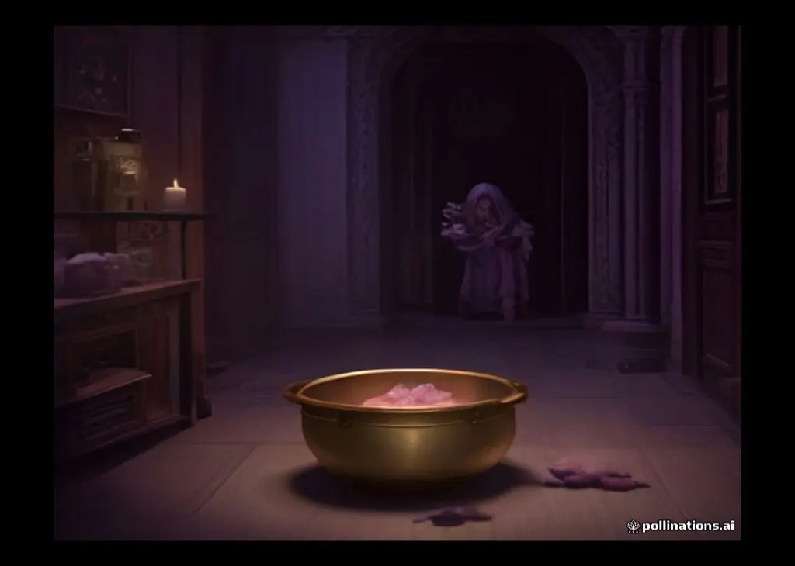
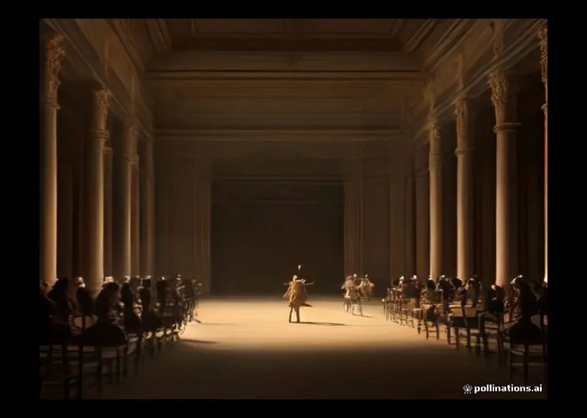

归档：2026年9月
卷六 · 瑙西卡公主
斯刻里亚岛住着费埃克斯人——航海无双、与诸神比邻的乐土之民。国王阿尔基诺奥斯的女儿瑙西卡当夜做了一个梦：雅典娜化作她的闺中密友，催她明晨去河边洗衣服——你嫁期将近，该准备嫁衣了。
卷七 · 迷雾中的王宫
雅典娜裹起奥德修斯，一路无阻地走进王宫，殿中众人都看不见他。费埃克斯人的宫殿富丽堂皇：青铜门楣、金银门犬、织机上的锦缎、墙外的果园——梨、石榴、苹果、无花果与橄榄次第成熟，园中两眼清泉终年不涸。荷马用一整段描述这座"神迹花园"，把费埃克斯人写成介于凡人与神明之间的乐土之民。
卷八 · 盲诗人的歌
翌日，阿尔基诺奥斯召集全城，备下盛宴与竞技款待贵客。席间盲诗人德摩多科斯弹唱特洛伊的故事——唱到奥德修斯与阿喀琉斯的争吵、木马入城，宾客中那个自称陌生人的人却把斗篷蒙在头上，无声流泪。只有国王看见了。
卷九 · 自述一：独眼巨人
卷十 · 自述二：风袋与女巫

卷十一 · 自述三：冥府之旅
船抵大地尽头，冥河汇入冥府之地。奥德修斯挖坑献祭：黑羊的血混着蜂蜜、酒与水，亡魂闻血而来，但要喝血之前，必须先挥剑拦住，只许回答问题。
卷十二 · 自述四：塞壬与窄峡
卷十三 · 重返伊萨卡
奥德修斯讲完了。满殿动容，阿尔基诺奥斯送他三件青铜宝物，贵人们各赠厚礼，一夜置办齐整。费埃克斯人的神船载着熟睡的英雄破浪而行，一夜之间渡过千里——船抵伊萨卡海湾，水手把沉睡的他连人带礼抬上沙滩，悄然返航。
卷十四 · 牧猪人的棚屋
欧迈俄斯的猪棚建在山岩上，十二个猪圈，四条猛犬。老牧猪人见"乞丐"进来，劈手抢过他披着的旧皮——"狗会咬坏它"——又捧出猪下颚肉、葡萄酒，倾其所有待客。他说：主人若在，我何至于这样苦？可他死在海上回不来了，我只好这样养着猪，替那帮求婚人白供酒肉。
卷十五 · 归来的儿子
雅典娜赶到斯巴达，唤醒熟睡的忒勒马科斯：该回家了——你的家产正被瓜分，母亲或许要改嫁。墨涅拉俄斯赠他双耳银杯作别。临行前一件骇人的事发生了：一只苍鹰俯冲而下，抓走园中白鹅——海伦笑着解梦：这是预告，奥德修斯就要回家复仇了。
卷十六 · 父子相认
忒勒马科斯与欧迈俄斯互道别来之事：求婚者设伏未成，家产日渐耗空。他叮嘱牧猪人进城给珀涅罗珀报个平安，自己留下陪客人。欧迈俄斯前脚出门，雅典娜后脚现身——她招手示意奥德修斯出棚，挥杖抹去乞丐的伪装：银发变金发，皮肤重现神采。旧主转瞬成为英挺的国王。
卷十七 · 乞丐入城
翌日，忒勒马科斯先行进城，嘱咐欧迈俄斯带"乞丐"随后跟来。临行前他叮嘱牧猪人：路过城门口那块石碑，别急着念叨主人——雷伊奥斯的狗阿尔戈斯还卧在那里。
卷十八 · 乞丐斗殴
翌日，宫里来了个真正的职业乞丐伊洛斯，惯于沿门讨食。他见"老头子"抢生意，出言挑衅。安提诺俄斯等人立马起哄：斗一场，赢家吃烤肠！奥德修斯撩起破衣，露出宽肩厚背——满座倒吸一口凉气。伊洛斯吓得直哆嗦，被众人推着上前。
卷十九 · 洗脚认疤
夜深人静，珀涅罗珀与"乞丐"长谈。她讲起自己的苦：当年织寿衣骗求婚者三年，夜夜拆掉；如今计穷，弓比试在即，无可再拖。又讲起当年送别丈夫的一幕——他握着她的手说：若我回不来，让忒勒马科斯长大便好；若我归来……那句话像刀子，二十年割着她的心。
卷二十 · 复仇前夜
这一夜，全伊萨卡无人安睡。奥德修斯在院中辗转，亲见女仆们窃笑私通求婚者，怒火中烧；忒勒马科斯从城外赶回，父子各自装作不识；雷声在无云的晴空炸响——宙斯的暗号。珀涅罗珀在楼上哭到力竭，梦见丈夫就在身边。心乱如麻的王后向猎神祷告，乞求当夜给她一个征兆；纺锤脱手的一瞬，晴空再度惊雷——她知道：神应了。
卷二十一 · 拉弓

卷二十二 · 诛杀求婚者
奥德修斯褪下破衣，纵身跃上门槛，把一壶箭倒在脚边，高声宣布："算不清旧账了！现在开始算新账——为我这二十年的耻辱！"话音未落，一箭正中安提诺俄斯的咽喉——他正举杯狂饮，酒杯翻倒，血从杯口涌出。满殿死寂：他们以为这一箭失手射错了人，直到老人亮出真名："你们豺狼，当我永远回不来了！现在，死路一条！"
卷二十三 · 夫妻相认
殿内火光重燃。珀涅罗珀下楼，在火边坐下，久久打量那个陌生男人——既不敢认，也不敢问。忒勒马科斯急了：母亲，我这颗心比石头还硬吗？二十年，坐在这里不哭不问！她答："我有我的道理。"她只吩咐：为客人备床——搬到寝殿门外那张婚床上去。
卷二十四 · 和解
冥府里，阿喀琉斯的亡魂迎着阿伽门农的亡魂而来。两位旧主互诉身后事：一个惊叹阿喀琉斯葬礼的盛大与儿子的荣光，一个细说归乡被弑的冤屈。随后亡魂们望见奥德修斯归家的消息，阿喀琉斯叹道：奥德修斯啊，你还是靠你的贤妻得了善终——愿你回家后一切安好。
荷马是谁？——史诗的作者之谜
两部史诗庄严开篇，都唤着一个名字："女神啊，请歌唱珀琉斯之子阿喀琉斯的愤怒"——歌唱者悬请缪斯，而缪斯的代言人，传统上叫荷马。可这位奠定了整个西方文学起点的人物，我们几乎一无所知：他是谁？生活在什么时候？真的存在过吗？
特洛伊是真的吗？——神话背后的考古
两千年来，特洛伊被视为传说。直到十九世纪，一个相信荷马的德国商人真的挖出了一座城。
口传的机器——六音步、程式与歌者
《伊利亚特》一万五千多行，《奥德赛》一万两千多行——在没有文字的时代，这样的篇幅如何流传？答案是：不靠背诵，靠"生成"。
阿喀琉斯的选择——愤怒史诗的核心
《伊利亚特》的第一个词是"愤怒"（μῆνις）。整部一万五千行的史诗，从愤怒开始，到愤怒平息结束。读懂这个愤怒，就读懂了这部诗。
神明何用？——奥林匹斯的叙事功能
读荷马的人常有一个疑问：神怎么到处插手？打斗要请神助阵，选边要靠掷签，连人心的动摇都归给一位下凡的女神。这算不算是"迷信"？
荣耀的代价——英雄文化的运行逻辑
英雄们为什么打十年仗不回家？答案藏在两个希腊词里：克罗斯（kleos）与提墨（timē）。
客谊法则——宙斯看护的陌生人
《奥德赛》里，一个陌生人可以走进陌生人的家门，吃住三日，临行获赠重礼，而主人分文不取。这不是奇风异俗，而是一整套神圣制度：客谊（xenia）。
智谋与归乡——《奥德赛》的另一条英雄标准
如果说《伊利亚特》是一部"力量"的史诗，《奥德赛》就是一部"智谋"的史诗。它的第一行就给主角定了性：那个"辗转多谋"（polytropos）的人——走过许多城邦、见过许多人心、拐过无数弯路的人。
织机与长弓——史诗中的女性
荷马史诗是男人的战场，但撑起两部长诗骨架的，是一群女性：女神、王后、公主、女俘、老乳母。读她们，能读出史诗最柔软也最锋利的一面。
一面盾上的世界——史诗的艺术与人间
《伊利亚特》第十八卷，战事正酣，诗人却按下了暂停键，用了约一百三十行，描写神匠赫菲斯托斯为阿喀琉斯锻造新盾。这段"盾之描写"是西方文学最早的器物诗，也是全诗的隐藏核心。